Your First Bot
Note
This article assumes the following:
- You have created a bot account and have a bot token.
- You have Visual Studio installed on your computer.
Create a Project
Open up Visual Studio and click on Create a new project towards the bottom right.
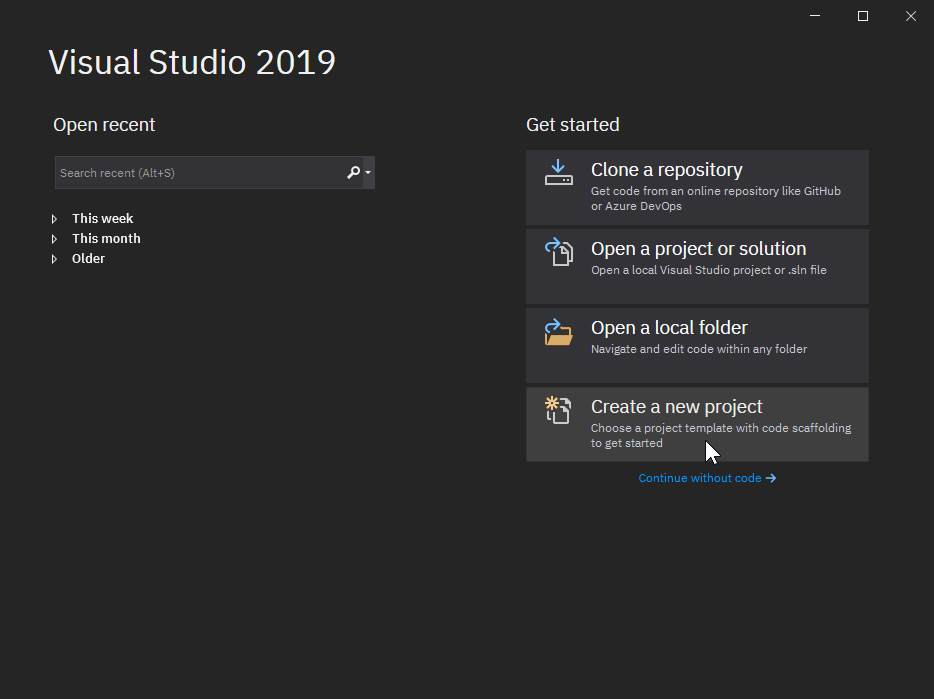
Select Console App then click on the Next button.
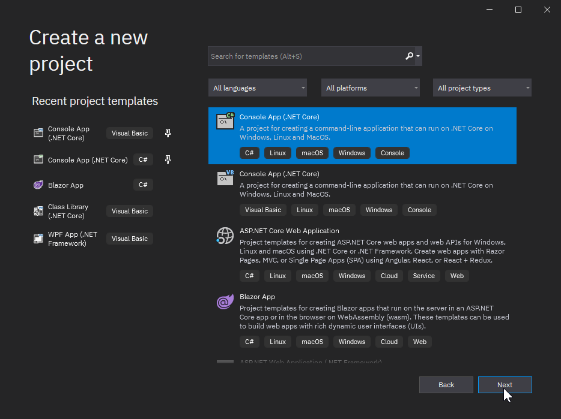
Next, you'll give your project a name. For this example, we'll name it MyFirstBot. If you'd like, you can also change
the directory that your project will be created in.
Enter your desired project name, then click on the Create button.
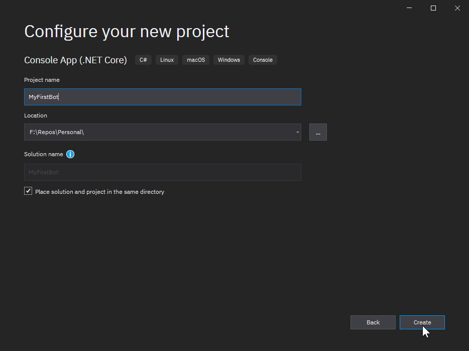
Voilà! Your project has been created!
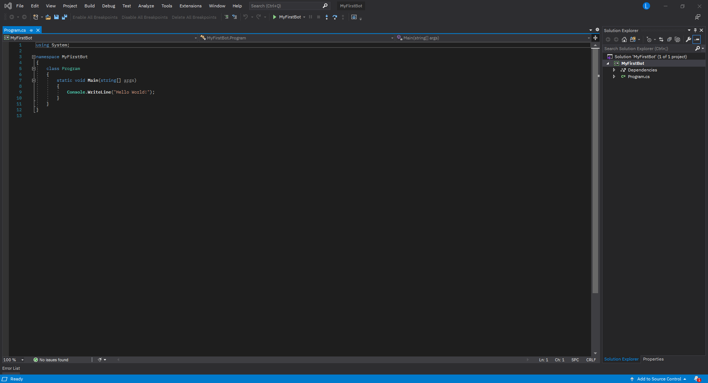
Install Package
Now that you have a project created, you'll want to get DSharpPlus installed.
Locate the solution explorer on the right side, then right click on Dependencies and select Manage NuGet Packages
from the context menu.
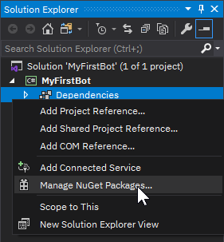
You'll then be greeted by the NuGet package manager.
Select the Browse tab towards the top left, then type DSharpPlus into the search text box.
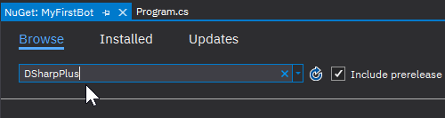
The first results should be the six DSharpPlus packages.
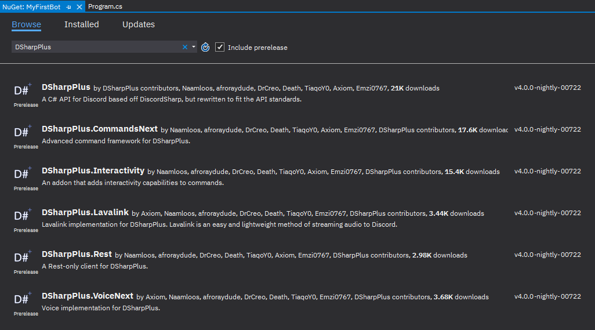
| Package | Description |
|---|---|
DSharpPlus |
Main package; Discord API client. |
DSharpPlus.CommandsNext |
Add-on which provides a command framework. |
DSharpPlus.SlashCommands |
Add-on which provides an application command framework. |
DSharpPlus.Interactivity |
Add-on which allows for interactive commands. |
DSharpPlus.Lavalink |
Client implementation for Lavalink. Useful for music bots. |
DSharpPlus.VoiceNext |
Add-on which enables connectivity to Discord voice channels. |
DSharpPlus.Rest |
REST-only Discord client. |
We'll only need the DSharpPlus package for the basic bot we'll be writing in this article. Select it from the list
then click the Install button to the right (after verifing that you will be installing the latest version).
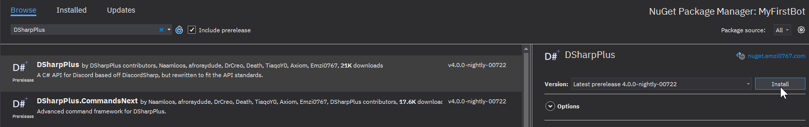
You're now ready to write some code!
First Lines of Code
DSharpPlus implements the Task-based Asynchronous Pattern. Because of this, the majority of DSharpPlus methods must be
executed in a method marked as async so they can be properly awaited.
We will therefore proceed to mark our Main method as async, which also means it has to return Task instead of void.
Head back to your Program.cs tab and edit the method as discussed.
static async Task Main(string[] args)
{
}
If you typed this in by hand, Intellisense should have generated the required using directive for you. However, if you
copy-pasted the snippet above, VS will complain about being unable to find the Task type.
Hover over Task with your mouse and click on Show potential fixes from the tooltip.
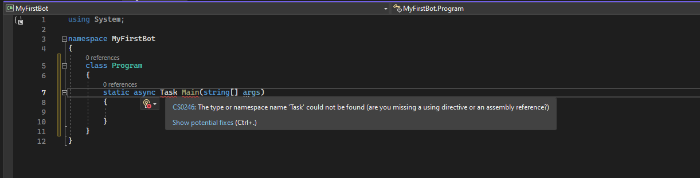
Then apply the recommended solution.
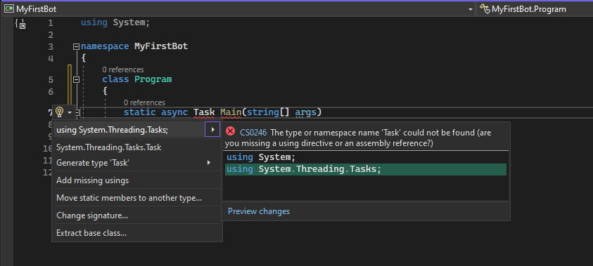
We'll now create a new DiscordClient instance in our brand new asynchronous method.
Create a new variable in Main and assign it a new @DSharpPlus.DiscordClient instance, then pass an instance of
@DSharpPlus.DiscordConfiguration to its constructor. Create an object initializer for @DSharpPlus.DiscordConfiguration
and populate the @DSharpPlus.DiscordConfiguration.Token property with your bot token then set the
@DSharpPlus.DiscordConfiguration.TokenType property to @DSharpPlus.TokenType.Bot. Next add the
@DSharpPlus.DiscordClient.Intents property and populate it with @DSharpPlus.DiscordIntents.AllUnprivileged.
These Intents are required for certain events to be fired. Please visit this article for more information.
var discord = new DiscordClient(new DiscordConfiguration()
{
Token = "My First Token",
TokenType = TokenType.Bot,
Intents = DiscordIntents.AllUnprivileged
});
Warning
We hard-code the token in the above snippet to keep things simple and easy to understand.
Hard-coding your token is not a smart idea, especially if you plan on distributing your source code. Instead you should store your token in an external medium, such as a configuration file or environment variable, and read that into your program to be used with DSharpPlus.
Follow that up with @DSharpPlus.DiscordClient.ConnectAsync* to connect and login to Discord, and await Task.Delay(-1);
at the end of the method to prevent the console window from closing prematurely.
var discord = new DiscordClient();
await discord.ConnectAsync();
await Task.Delay(-1);
As before, Intellisense will have auto generated the needed using directive for you if you typed this in by hand. If
you've copied the snippet, be sure to apply the recommended suggestion to insert the required directive.
If you hit F5 on your keyboard to compile and run your program, you'll be greeted by a happy little console with a
single log message from DSharpPlus. Woo hoo!
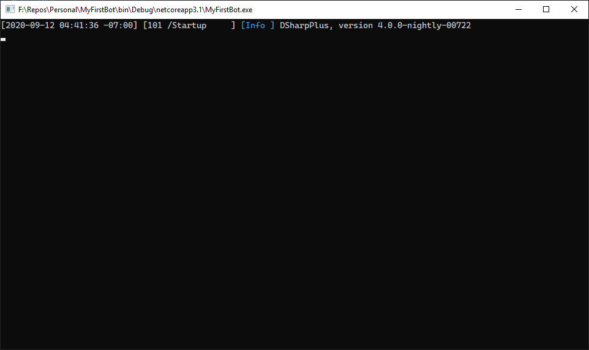
Spicing Up Your Bot
Right now our bot doesn't do a whole lot. Let's bring it to life by having it respond to a message!
As of September 1st 2022, Discord started requiring message content intent for bots that want to read message content. This is a privileged intent!
If your bot has under 100 guilds, all you have to do is flip the switch in the developer dashboard. (over at https://discord.com/developers/applications) If your bot has over 100 guilds, you'll need approval from Discord's end.
After enabling the intent in the developer dashboard, you have to specify your intents in you DiscordConfiguration:
var discord = new DiscordClient(new DiscordConfiguration()
{
Token = "My First Token",
TokenType = TokenType.Bot,
Intents = DiscordIntents.AllUnprivileged | DiscordIntents.MessageContents
});
Now you can start to listen to messages.
Hook the @DSharpPlus.DiscordClient.MessageCreated event fired by @DSharpPlus.DiscordClient with a lambda. Mark it
as async and give it two parameters: s and e.
discord.MessageCreated += async (s, e) =>
{
};
Then, add an if statement into the body of your event lambda that will check if
@DSharpPlus.Entities.DiscordMessage.Content starts with your desired trigger word and respond with a message using
@DSharpPlus.Entities.DiscordMessage.RespondAsync*if it does. For this example, we'll have the bot to respond with
pong!for each message that starts withping.
discord.MessageCreated += async (s, e) =>
{
if (e.Message.Content.ToLower().StartsWith("ping"))
await e.Message.RespondAsync("pong!");
};
The Finished Product
Your entire program should now look like this:
using System;
using System.Threading.Tasks;
using DSharpPlus;
namespace MyFirstBot
{
class Program
{
static async Task Main(string[] args)
{
var discord = new DiscordClient(new DiscordConfiguration()
{
Token = "My First Token",
TokenType = TokenType.Bot,
Intents = DiscordIntents.AllUnprivileged | DiscordIntents.MessageContents
});
discord.MessageCreated += async (s, e) =>
{
if (e.Message.Content.ToLower().StartsWith("ping"))
await e.Message.RespondAsync("pong!");
};
await discord.ConnectAsync();
await Task.Delay(-1);
}
}
}
Hit F5 to run your bot, then send ping in any channel your bot account has access to. Your bot should respond with
pong! for each ping you send.
Congrats, your bot now does something!
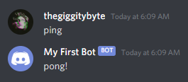
Further Reading
Now that you have a basic bot up and running, you should take a look at the following: